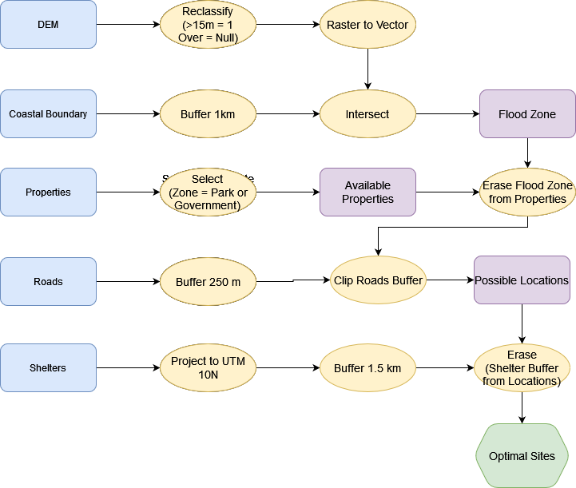
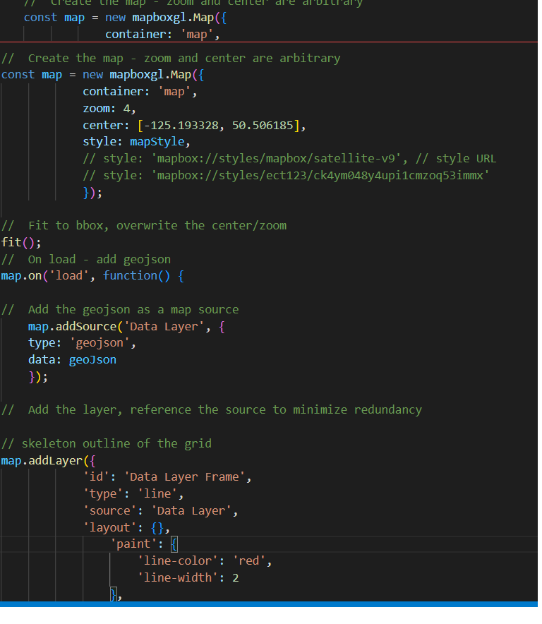

GIS Workflows
The flow of information through a project
GIS Workflows
- Identify a problem/research question
- Explore available data
- Pares and clean the data (pre-processing)
- Spatial Analysis
- Refine and incorporate more data as needed
- Final visualizations (maps/charts/etc.)
- Sumarzie results, identify new questions
Visualizing a Workflow
It is a good idea to think through a workflow before conducting it, you can sketch a simple flowchart to think through the logical progression of analysis steps.
An Example
The city of Port Alberni has been given funding build a new evacuation shelter. You have been contracted by the city and tasked with finding a suitable location for the shelter.
An Example
The shelter must:
- Above the flood zone: > 15 m elevation or > 1 km from coast.
- > 1.5 km from existing shelters.
- < 250 m from an Arterial Roadway.
- Not on Residential, Commercial, or Industrial parcels.

Visualizing a Workflow
It is best to create a workflow that is repeatable, modifiable, and sharable.
- "Point and Click" GIS is not repeatable.
- Model Builder is a good solution for beginners.
- Once you progress with your GIS career, you could consider learning to code.

Visualizing a Workflow
If you progress with your GIS career, you should consider learning to code.
- Code is replicable, ledgible, and explicit.
- Python is a great option for geospatial analysis.
- Javascript is great for making webmaps.

Visualizing a Workflow
If you progress with your GIS career, you should consider learning to code.
- Code is replicable, ledgible, and explicit.
- Python is a great option for geospatial analysis.
- Javascript is great for making webmaps.